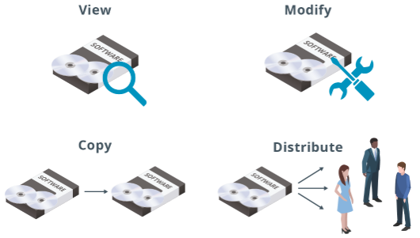

Open Source Software
Open Source Software
Open source software (
OSS) refers to computer code that any useer is permitted to view, copy and modify for any reason, as well as distribute to anyone. Users are granted these rights when the author of the software releases the source code under one of several open source licenses. The opposite of OSS is proprietary software - software that is released under a license that imposes rectrictions on one or more of the rights just mentioned (view, copy, modify, ditribute).
OSS provides several advantages to users, administrators and programmers alike. Perhaps te most important element of OSS is that it encourages the ongoing development of software in a collaborative, community-driven environment. Individuals or groups of developers may build ipon another developer's work to create enhanced or customized software, all while avoiding legal issues. There are many examples of OSS, one of which is the Linux kernel.
The fundamental permissions granted by open source software.